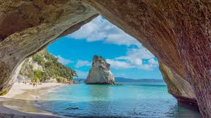
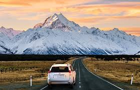

Introduction
Welcome to New Zealand, a land of breathtaking landscapes, vibrant culture, and unparalleled adventure. Nestled in the southwestern Pacific Ocean, this island nation offers travelers a diverse range of experiences, from snow-capped mountains to pristine beaches, lush rainforests to rugged fjords.
Natural Beauty
New Zealand is renowned for its stunning natural beauty, with landscapes that seem straight out of a postcard. The country boasts majestic mountains, including the iconic peaks of the Southern Alps, such as Aoraki/Mount Cook, the highest mountain in New Zealand. Travelers can explore ancient glaciers, crystal-clear lakes, and verdant valleys, each more picturesque than the last.
Maori Culture
Immerse yourself in the rich cultural heritage of the Maori, the indigenous people of New Zealand. Discover the fascinating history, traditions, and legends of the Maori through cultural performances, immersive experiences, and visits to historic sites such as Waitangi Treaty Grounds and Te Puia in Rotorua. Engage with local Maori communities and gain insight into their customs, art, and way of life.
Culinary Delights
Indulge your taste buds in New Zealand's culinary delights, which reflect the country's diverse influences and abundant produce. Sample fresh seafood, including succulent green-lipped mussels, creamy Bluff oysters, and plump Pacific salmon. Explore local markets, vineyards, and artisan producers, where you can taste world-renowned wines, artisan cheeses, and farm-fresh fruits.
Road Trip Wonders
Embark on an unforgettable road trip adventure along New Zealand's scenic highways and byways. The country's well-maintained roads and breathtaking vistas make it the perfect destination for self-drive exploration. Wind your way through dramatic landscapes, stopping at charming towns, hidden beaches, and natural wonders along the way. Don't forget to take in the stunning vistas of the iconic Milford Sound, the rugged coastline of the Catlins, and the pristine beaches of the Coromandel Peninsula.
